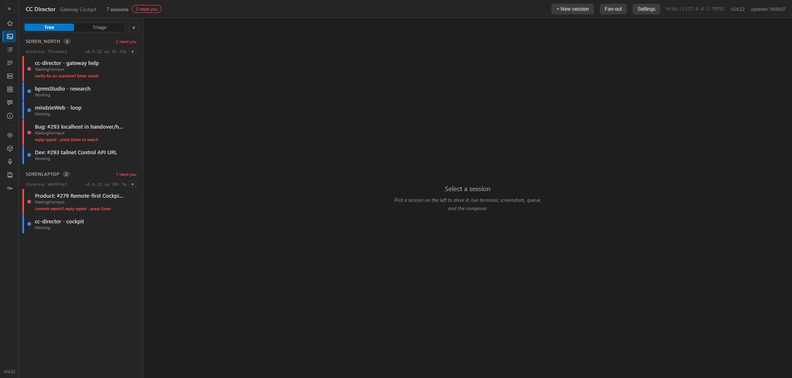
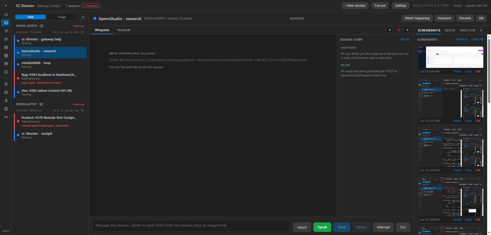
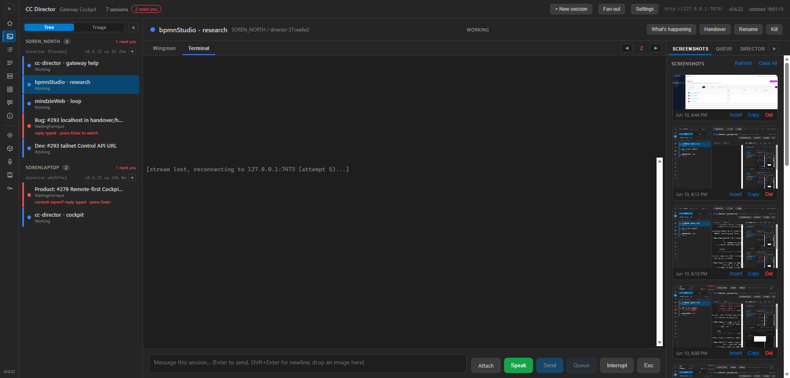
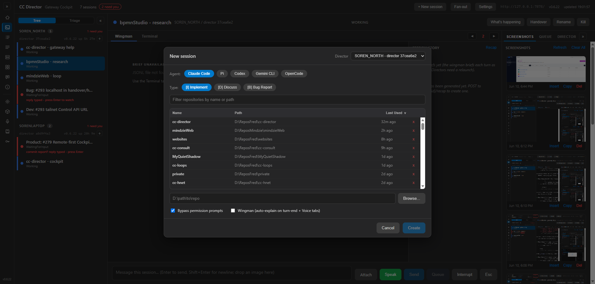
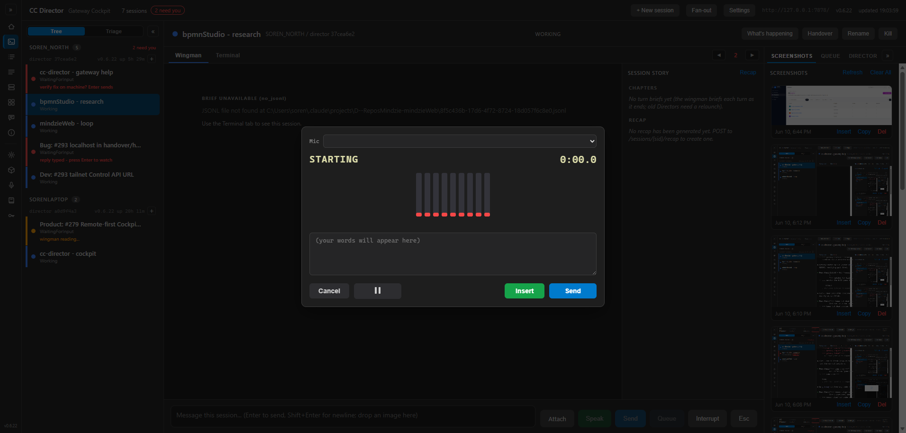

Developer Agent (CenCon) - branch issue-199-cockpit-logging - verified 2026-06-10.
Build: dotnet build cc-director.sln = Build succeeded, 0 Warning(s), 0 Error(s).
Tests: CcDirector.Cockpit.Tests = 26 passed, 0 failed.
The Cockpit was the only product component with no persisted logging - CockpitSupervisor
launches it CreateNoWindow with no stdout capture, so every ILogger line went to
an invisible console and the browser side logged nothing. This change closes that gap:
CcDirector.Cockpit/Logging/:
CockpitFileLogWriter (a self-contained mirror of the Director/Gateway
FileLogWriter - dated file, FileShare.Read, day-rollover, bounded flush),
CockpitFileLog (static facade resolving
%LOCALAPPDATA%\cc-director\logs\cockpit\cockpit-YYYY-MM-DD-<PID>.log, honoring
CC_DIRECTOR_ROOT), and CockpitFileLoggerProvider (routes every
ILogger call to the file in the Director text format LEVEL [Category] message).
Wired in Program.cs with CcDirector.Cockpit at Debug for the file
sink, plus a clean-shutdown flush. (The Cockpit deliberately does not reference Core, so the writer is
duplicated, not referenced.)sid + director endpoint):
session select (with source), center + right tab switches, composer Send / Queue / Interrupt / Esc /
Attach(name+size) / Speak start-stop, kebab actions, new-session open/submit (repo + options), settings
open/save, fan-out, hold/wingman toggles. Message text is never logged (secrets rule).TerminalPane logs connect attempt / dispatched /
dispose, plus an empty-DirectorBase WARNING carrying the session state. New
CockpitCircuitHandler persists Blazor circuit opened/UP/DOWN/closed. cockpit-terminal.js
now logs ws open / first-frame(bytes+ms) / close(code,reason) / each reconnect attempt, gated behind a
localStorage cockpit.debug=1 flag.An isolated Cockpit was built from this branch and run on
http://127.0.0.1:7473 (alternate port), pointed at the live Gateway roster - the live fleet
(7878 / 7470 / 7887) was never touched, and no destructive action (Send / Kill) was performed against a live
session. The Cockpit was driven with a real browser (Edge via browser-harness): select a session, switch
center+right tabs, open the Terminal stream, open the kebab + a kebab action, open the new-session dialog,
open settings, and start/cancel Speak. Both the persisted server log and the browser console were captured.
cockpit-YYYY-MM-DD-<PID>.log exists and contains INFO lines.cockpit-action-log-excerpt.txt - file cockpit-2026-06-10-10684.log,
starting with INFO [Program] Cockpit starting; log file = .... Framework
[Lifetime] lines also persist, proving the provider routes all ILogger output.sid + director endpoint.cockpit-action-log-excerpt.txt.cockpit.debug=1 the browser console logs ws open/close with code+reason.TerminalPane connect attempt ... wsUrl=... /
connect dispatched) and browser-console-cockpit-debug.txt
(ws close code=1006 reason=(none) + reconnect attempts), screenshot 03 + 05.CockpitFileLoggerProviderTests.RenderLine_BlankDirectorBaseWarning_UsesWarnTagAndCarriesState
asserts WARN [TerminalPane] TerminalPane empty DirectorBase sid=... state=.... The
TerminalPane emits this at Log.LogWarning when DirectorBase is blank, and
the file sink persists WARNINGs (the CockpitCircuitHandler DOWN line in the excerpt is a live WARN
example proving the sink writes WARNING level). Every live session in the harness had a reachable endpoint, so
the empty-endpoint branch could not be triggered live without disturbing the fleet; it is therefore proven by
the production-renderer unit test plus the live WARN-persistence evidence.| User action (browser click) | Persisted log line (server) |
|---|---|
| Select session "bpmnStudio - research" (rail click) | INFO [Cockpit] Cockpit: select session sid=be3ee447-... source=rail director=http://127.0.0.1:7887 |
| Center tab → Terminal | INFO [Cockpit] Cockpit: center tab -> term sid=be3ee447-... director=http://127.0.0.1:7887 |
| (Terminal opens the stream) | INFO [TerminalPane] TerminalPane connect attempt sid=be3ee447-... wsUrl=ws://127.0.0.1:7473/sessions/.../stream → connect dispatched |
| Center tab → Wingman | INFO [Cockpit] Cockpit: center tab -> brief ... + INFO [TerminalPane] TerminalPane dispose sid=be3ee447-... |
| + New session (open dialog) | INFO [Cockpit] Cockpit: new-session dialog open |
| Settings (open dialog) | INFO [Cockpit] Cockpit: settings dialog open |
| Kebab → Copy Handover Info | INFO [Cockpit] Cockpit: kebab action=copy-handover sid=be3ee447-... director=http://127.0.0.1:7887 |
| Composer Speak (open dictation) | INFO [Cockpit] Cockpit: composer Speak start sid=be3ee447-... director=http://127.0.0.1:7887 |
| Speak Cancel | INFO [Cockpit] Cockpit: composer Speak stop (cancel) sid=be3ee447-... |
| Right tab → Queue / Director / Screenshots | INFO [Cockpit] Cockpit: right tab -> queue|director|shots sid=be3ee447-... director=http://127.0.0.1:7887 |
| Browser tab connect / reconnect / close (circuit) | INFO/WARN [CockpitCircuitHandler] Circuit opened|connection UP|connection DOWN|closed id=... |
[cockpit-terminal] connect -> ws://127.0.0.1:7473/sessions/be3ee447-.../stream [cockpit-terminal] ws error ws://127.0.0.1:7473/sessions/be3ee447-.../stream [cockpit-terminal] ws close code=1006 reason=(none) [cockpit-terminal] reconnect attempt 2 -> ws://127.0.0.1:7473/sessions/be3ee447-.../stream ... (attempts 3, 4, 5 follow, see browser-console-cockpit-debug.txt)
With the flag absent the console stays quiet. Full capture: browser-console-cockpit-debug.txt.





No architecture or security drift. This change adds the persisted logging that the existing security
profile already expects (DT-06 "Comprehensive logging (FileLog)"). It honors the secrets rules
(DT-01 / DT-05 "secrets never logged"): composer message text and prompt bodies are never logged - only the
action, the sid, the director endpoint, and non-sensitive metadata (attach name+size, repo +
new-session options). No architecture_manifest.yaml container shape changed; no new blocking
security rule is touched.
CockpitFileLogWriterTests - dated-path naming (cockpit- prefix), day-rollover lands in the new
file, transient write failure does not kill the writer thread, bounded-interval flush under load, blank-dir
ctor guard.CockpitFileLoggerProviderTests - the production renderer's exact text contract: INFO/WARN/ERROR
tags, short category, the blank-DirectorBase WARNING shape (AC4), exception append, and every level→tag mapping.I believe this is finished. All four acceptance criteria are met with proof, the solution builds clean (0 warnings / 0 errors), all 26 Cockpit tests pass, and the live fleet was confirmed up after teardown.